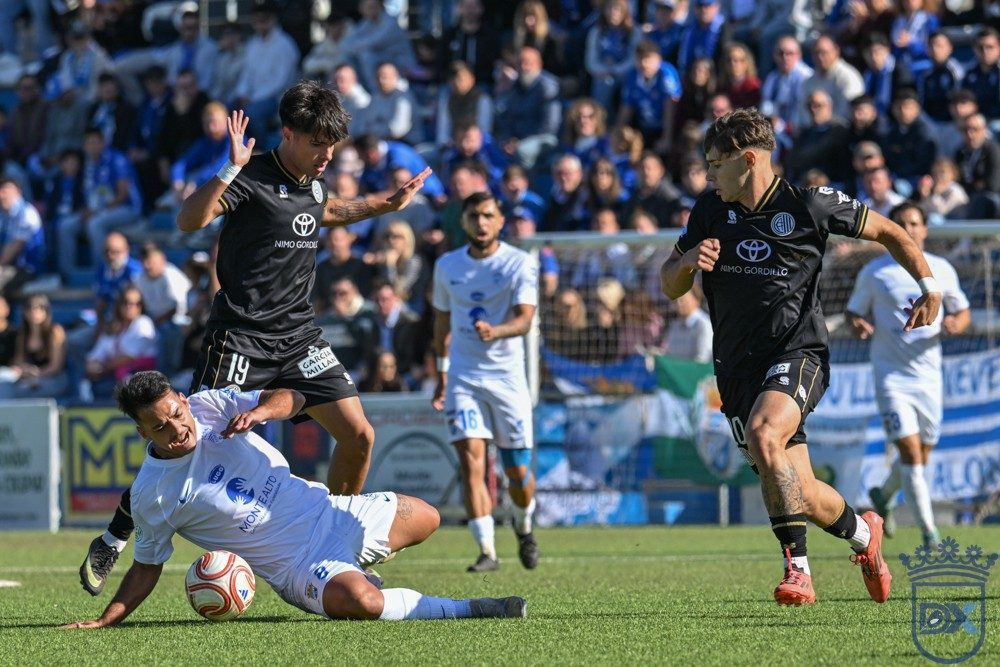

Linares arrive at Chapín unbeaten in eight matchdays

Photo: Diario XerecistaXerez CD, second after five straight wins, host Linares Deportivo on Sunday 29 November at 18:00. The visitors are sixth, one point behind, and one of the most in-form sides in the group.
Xerez CD and Linares Deportivo meet in the matchday 13 headline game in Group IV of Segunda RFEF, on Sunday 29 November at 18:00 at Chapín. It brings together two of the most in-form teams in the group: Xerez have won five in a row and Linares are eight matchdays unbeaten.
Opponents unbeaten since September
The Jaén side have not lost since matchday 4, when they were beaten 4-0 away to Betis B. Since then they have collected four wins and four draws. Last weekend they beat Atlético Sanluqueño 3-0. They are sixth on 20 points, one fewer than Xerez, with 18 goals scored and 14 conceded.
Away from home, Linares are one of the best travellers in the group. They have taken 11 of their 20 points on the road, with three wins, two draws and one defeat. Among those wins is the one they earned at the Ciudad de Alcalá against Atlético Central, the ground where Xerez won last Sunday. As Abel Segovia pointed out after the match, only Linares and Xerez have won there.
Xerez want to make Chapín a fortress
Xerez are second on 21 points, three behind Recreativo de Huelva. Like their opponents, they have taken more points away (11) than at home (10). At Chapín they have three wins, one draw and two defeats, with six goals scored and four conceded. They won their last two home games, against Marbella (1-0) and Antoniano (2-0).
Moi returns
Abel Segovia has Moi back after he served his one-match ban for the two yellow cards against Antoniano. It is still too early to know how the injured players, Chuma and Fali, are progressing.
A win would put Xerez four points clear of Linares and keep them in the race for first place.
🇪🇸 Leer en español ← Back to home